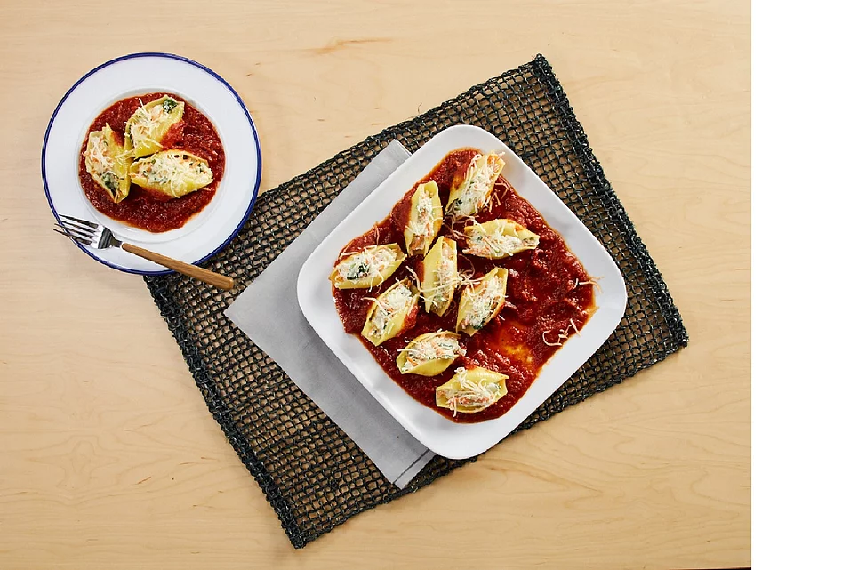

Pasta

Jumbo pasta shells are filled with a shredded veggie and cheese mixture, then heated in a skillet with lots of traditional pasta sauce.
Ingredients
- 12 dry jumbo shell macaroni
- 1 ¼ cups shredded carrots
- 1 ¼ cups shredded carrots
- ⅓ cup finely chopped onion
Steps
- In a large saucepan cook pasta according to package directions; drain. Rinse pasta with cold water; drain again.
- Meanwhile, in a 12-inch skillet cook carrots, zucchini, and onion in hot oil over medium-high heat 3 to 5 minutes or until tender. Stir in spinach; cook and stir 1 minute. Transfer vegetable mixture to a large bowl.
- Stir ricotta cheese, 3/4 cup of the Italian-blend cheese, and salt into vegetable mixture. Spoon a rounded 2 Tbsp. filling into each pasta shell. Pour RAGÚ® Homestyle Thick and Hearty Traditional Sauce into skillet; place filled shells on sauce. Heat shells and sauce, covered, over medium heat 10 minutes or until heated through. Sprinkle with remaining cheese.